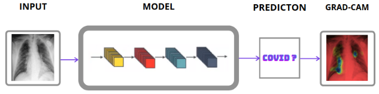
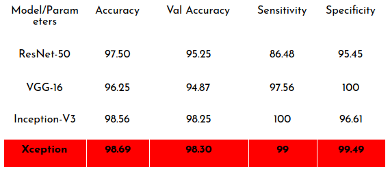
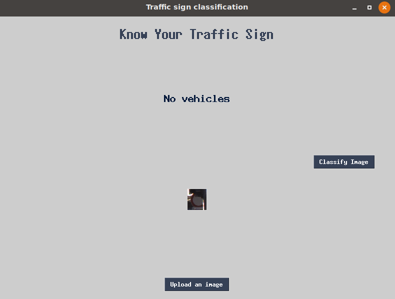

CoVac : COVID-19 Diagnosis
The outbreak of COVID-19 has caused more than 9.5 million cases in India so far, with that number continuing to grow. To control the spread of the disease, screening large numbers of suspected cases for appropriate quarantine and treatment measures is a priority. The availability and quality of laboratory testing in the infected region presents a challenge, so alternative diagnostic methods are urgently needed to combat the disease. Different COVID-19 tests are costly & time taking.
Based on COVID-19 radio-graphical changes in X-rays images, I hypothesized that deep learning methods might be able to extract COVID-19’s specific graphical features and provide a clinical diagnosis ahead of the pathogenic test, thus saving critical time for disease control.
Models used in this project are VGG-16, ResNet-50, Inception-V3 and Xception. Out of that, best performing model will be used in Grad-CAM for visualization.
Dataset
For the training and development of Deep learning based classification models, COVID-19, and normal chest X-ray images were downloaded from ieee github repository and Kaggle.
Class Imbalance: Total number of a class of data (covid positive) is far less than the total number of another class of data (covid -ve).
Solved by using Weighted Cross Entropy Loss.
Workflow

Model Evaluation

WeAlert: Drowsiness Detection
Today drowsy driving is a serious problem that leads to thousands of accidents each year. Motor vehicle collisions lead to significant death and disability as well as significant financial cost to both security and individual due to the driver impairments. Drowsiness is one of the factors for collisions.
According to the National Highway Traffic Safety Administration, every year about 100,000 police-reported crashes involve drowsy driving. These crashes result in more than 1,550 fatalities and 71,000 injuries. The real number may be much higher, however, as it is difficult to determine whether a driver was drowsy at the time of a crash.
Accidents occur because of single negligence, thus drowsiness detection system which works in real-time is necessary.
A drowsiness detection system on a vehicle can reduce many accidents. This project proposes different algorithms for driver drowsiness such as Support Vector Machine (SVM), Long Short Term Memory Units (LSTM) - Convolutional Neural Network (CNN).
The proposed algorithms make use of features learned using a convolutional neural network (CNN) so as to explicitly capture various latent facial features and the complex non-linear feature interactions.
You must have heard about the self-driving cars in which the passenger can fully depend on the car for traveling. But to achieve level 5 autonomous, it is necessary for vehicles to understand and follow all traffic rules.
There are several different types of traffic signs like speed limits, no entry, traffic signals, turn left or right, children crossing, no passing of heavy vehicles, etc. Traffic signs classification is the process of identifying which class a traffic sign belongs to.

Successfully classified the traffic signs classifier with 95% accuracy and also visualized how our accuracy and loss changes with time, which is pretty good from a simple CNN model.
Travel-Yatri is the system that automatically suggests an itinerary plan for a travel destination based on the dates and places of visit. The purpose of Travel-Yatri is to provide the end-user with an itinerary that is suited to their custom needs.
This also enables the user to spend whatever little time he/she/they have (for example between two train stations) to see the landmarks in the city.
"Travel-Yatri" is aimed to be the most-exhaustive and efficient travel itinerary, including everything from tourist destinations, local attractions, food options, hotel deals, travel options, etc. The itinerary is self-sufficient, in the sense that it includes point to point transportation and affordable stay options.
“Travel-Yatri” is an online portal for automated planning of a travel itinerary, which can be used by a user before their journey. On the commercial side, Travel-Yatri helps travel agencies to plan their packages & tours.